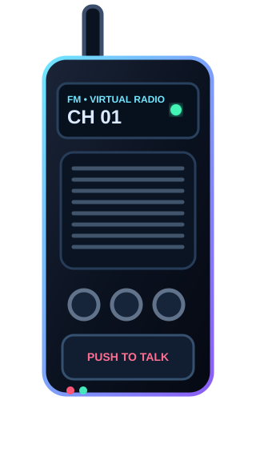

Generate FM
Understand how a low-frequency message changes the instantaneous frequency of a high-frequency carrier.
Explore the signal. Watch the spectrum. Experience the radio link.
Build an FM signal from a message and carrier, observe its time-domain waveform, inspect its spectrum using FFT, introduce channel impairments, and finally operate a virtual push-to-talk FM walkie-talkie.
Follow the modules in order. Change one parameter at a time, run the simulator, observe the plots, and record what changes. The separate walkie-talkie module is the practical application of the same FM signal chain.
Understand how a low-frequency message changes the instantaneous frequency of a high-frequency carrier.
Relate message frequency, carrier frequency, frequency deviation, modulation index and bandwidth.
Use a discrete Fourier transform / FFT to move from time domain to frequency domain and identify spectral components.
Introduce attenuation and additive noise and examine their effect on the received waveform.
Recover an estimate of the original message from the instantaneous phase/frequency of the received FM signal.
Operate a virtual push-to-talk walkie-talkie and follow audio → FM → channel → demodulation → recovered audio.
To generate a frequency-modulated signal, observe its time-domain and frequency-domain characteristics, study the effect of modulation parameters and channel noise, and understand FM as used in a two-way voice communication system.
FM carries information by varying the instantaneous frequency of a carrier while ideally keeping its amplitude constant.
Let the message be a sinusoid:
Here Am is the message amplitude and fm is its frequency.
A high-frequency carrier is used as the basis of transmission:
Usually fc is much larger than fm.
In FM, information changes the instantaneous frequency:
Δf is the peak frequency deviation.
A larger β generally produces more significant sidebands and a wider occupied spectrum.
For a single-tone FM signal, a commonly used engineering estimate for bandwidth is:
In an ideal FM waveform, the envelope remains approximately constant. When the message becomes positive, instantaneous frequency increases; when the message becomes negative, instantaneous frequency decreases. This appears visually as changing spacing between the carrier cycles.
Use the following sequence as your laboratory procedure and record your observations after each major change.
Choose the message frequency fm and amplitude. Start with a simple sinusoidal message.
Choose a carrier frequency fc that is sufficiently higher than the message frequency for clear visualization.
Set Δf. Observe how changing deviation changes β and the bandwidth estimate.
Run the FM simulator and compare message, carrier and FM waveforms.
Move to the frequency-domain view. Locate the carrier region and important sideband components.
Increase noise and attenuation gradually. Observe changes in the received and recovered waveforms.
Use the separate PTT simulator as an application of the same FM chain. Load an audio file or use the built-in demo signal.
Note how fm, Δf, β, bandwidth, noise and attenuation affect the displayed signals.
Change the controls and press Run Simulation. The plots update immediately.
Start with the default values, then change one parameter at a time.
Increase Δf: the carrier's instantaneous frequency swings farther from fc. Increase fm while keeping Δf fixed: β decreases. Add noise: the received waveform becomes irregular. Add attenuation: the received amplitude falls.
The FFT decomposes the sampled waveform into frequency components. Use it to connect the waveform you see in time to the spectrum predicted by FM theory.
The browser implementation uses a numerical discrete Fourier transform/FFT on the simulated samples. It is intended for visualization rather than precision RF spectrum measurement.
Keep Δf fixed and increase fm. Calculate β each time and compare the displayed bandwidth. Then keep fm fixed and increase Δf.
A communication link is not ideal. This module lets you observe attenuation and additive noise before the demodulator attempts recovery.
Attenuation reduces the amplitude of the received waveform. In this educational simulator it is represented as a simple gain reduction.
Noise is modeled as a random disturbance added to the signal. As noise increases, the receiver has a harder task estimating the instantaneous phase/frequency.
Experience the complete FM communication chain in motion.
A separate practical module built on the same FM communication chain. Press and hold PTT to simulate transmission.

SCR-300 portable FM voice receiver-transmitter • CC0 / public domain imageA walkie-talkie is a two-way radio. In this virtual version, the microphone/audio source provides the message, an FM stage varies the carrier frequency, the channel adds optional impairments, and the receiver reconstructs the audio.
The microphone converts voice into an electrical message signal.
The SCR-300 was a portable FM voice receiver-transmitter associated with WWII-era field communication. Its inclusion here is historical context: the simulator does not reproduce its hardware, power system or real RF operation.
Use these tables directly while performing the experiment. Values update when you run the main simulator.
| Parameter | Symbol | Example/default | What to observe |
|---|---|---|---|
| Message frequency | fm | 5 Hz | Controls how quickly instantaneous frequency varies. |
| Carrier frequency | fc | 100 Hz | Sets the central carrier location. |
| Frequency deviation | Δf | 25 Hz | Larger deviation produces larger frequency swings. |
| Modulation index | β | 5.00 | Ratio of deviation to message frequency. |
| Bandwidth | BT | 60 Hz | Carson estimate grows with Δf and fm. |
| Noise | n(t) | Adjustable | Distorts the received waveform and recovery. |
Frequency modulation was generated and analyzed in time and frequency domains. The experiment demonstrates that FM information is represented by variations in instantaneous frequency, that frequency deviation and message frequency determine the modulation index and approximate bandwidth, and that channel noise/attenuation can degrade the received and recovered signal. The walkie-talkie simulator demonstrates the same chain as a practical communication application.
Try answering without looking at the theory. Submit the quiz to check your score.
The interface is original, while the academic structure is inspired by the step-by-step approach used by Virtual Labs.
Virtual Labs recommends step-by-step instructions and supports remote laboratory learning through browser-based experiments.
Open Electronics & Communications labs ↗IIT Bombay hosts multiple Virtual Labs under the national initiative, including Electronics & Communications laboratories.
Open IIT Bombay Virtual Labs ↗Use a standard Signals & Systems or Digital Signal Processing textbook for deeper treatment of Fourier transforms, spectra and sampling.
Suggested: Oppenheim & Willsky, Signals and Systems; Oppenheim & Schafer, Discrete-Time Signal Processing.
The walkie-talkie module uses a historical SCR-300 image from Wikimedia Commons. The source page identifies the photograph as CC0 / public domain.
Open image source ↗